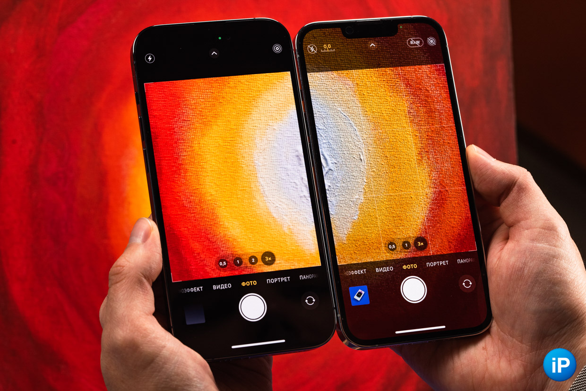
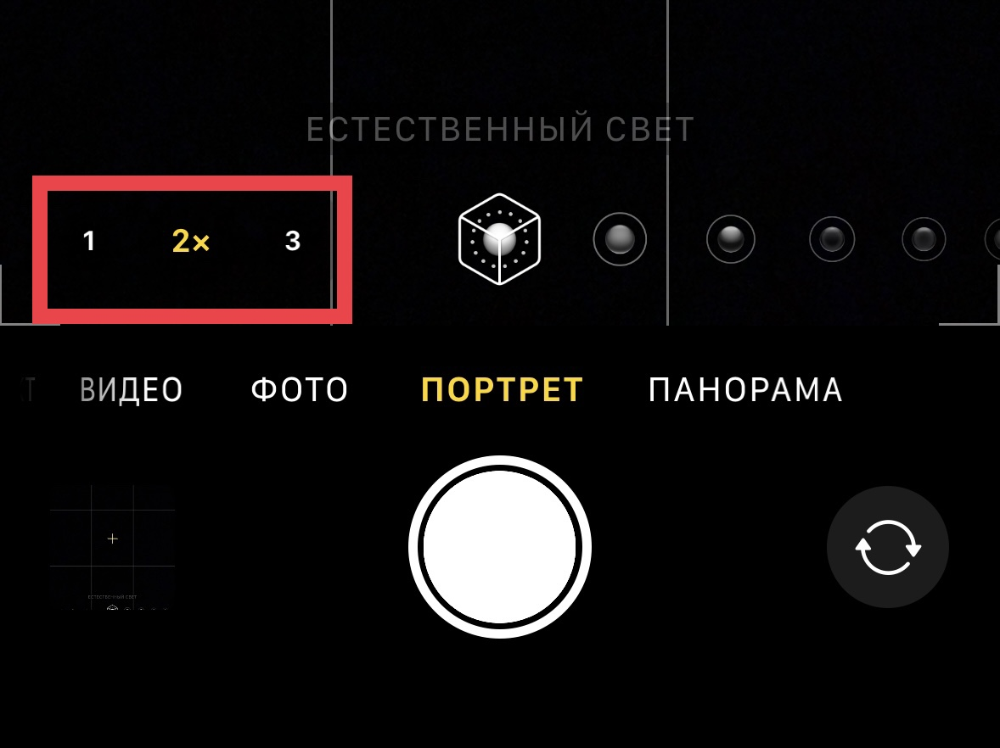

Новое в Iphone 14
.png)
у iPhone 14 Pro и iPhone 14 Pro Max действительно уникальные особенности, которых нет больше ни у одного другого айфона. Даже у прошлого поколения. Сегодня сосредоточимся именно на них. Одну даже открыл для себя буквально на днях. И связана она с приложением Камера. На самом деле, все крупные изменения сосредоточены именно в самом объективе. С него и начнем. Не будет останавливаться на цветах и опциях, которые недоступны в России. Только о важном.
1. Камера 48 МП
Пожалуй, это одно из самых крупных изменений в линейке Pro. Apple наконец-то установила 48-мегапиксельный модуль в свои смартфоны. Благодаря этому фотографии сохраняют больше деталей при приближении. По умолчанию новый сенсор объединяет четыре пикселя в один для повышения светочувствительности и обеспечивает 12-мегапиксельное изображение с 48-мегапиксельного датчика. С увеличенным размером фотомодуля он может захватывать в 4 раза больше света, чем при 12 МП на старых моделях. Для сравнения, датчик на 14 Pro на 65% больше, чем на 13 Pro. При этом можно снимать в формате ProRAW и разрешении 48 МП, а затем обрезать кадр так, как нужно вам, без потерь качества. То есть камера делает снимок в формате 48 МП, и его можно обрезать в 4 раза до уровня 12 МП. За счёт этого мы получаем высокодетализированный снимок, который содержит больше информации о кадре, чем если бы вы снимали при простых 12 МП. Но такой формат уже ближе профессиональным фотографам. Кроме того, теперь можно снимать фото и видео не только при 3-кратном увеличении, но и при 2-кратном. То есть съемка всё ещё ведется на 48-мегапиксельный модуль, но уже в кропе, за счёт чего качество также не снижается. Из этих нововведений вытекает и следующий пункт. Для тех, кто любит портретную съемку.
2. Портретный режим
В отличие от других айфонов, iPhone 14 Pro и iPhone 14 Pro Max могут снимать портретные фото в трех режимах: • 1х • 2х • 3х До этого камера смартфона автоматически приближала изображение с телефотомодуля для получения четких портретов. Теперь же есть возможность съемки в Портретном режиме при одно- и двухкратном зуме без потери качества. То есть можно даже не отходить от объекта, если это не требуется, как раньше. Apple также значительно улучшила фотосъемку при слабом освещении с помощью новой системы камер. И улучшения не ограничиваются только главной камерой. iPhone 14 Pro/Pro Max теперь может делать в 3 раза лучшие фото при слабом освещении со сверхширокоугольной камеры и в 2 раза лучше с телеобъектива. Это же касается и портретов, которые при разном зуме содержат меньше шумов.
3. Режим Экшн
Чтобы вы понимали, «прошка» не будет снимать в Режиме Экшн при даже слегка приглушенном освещении. Например, в аэропорту или спортзале. Камере банально не хватит данных. А вот на улице смартфон отлично справляется с этой задачей. Можно захватывать кадры при беге или езде на велосипеде.